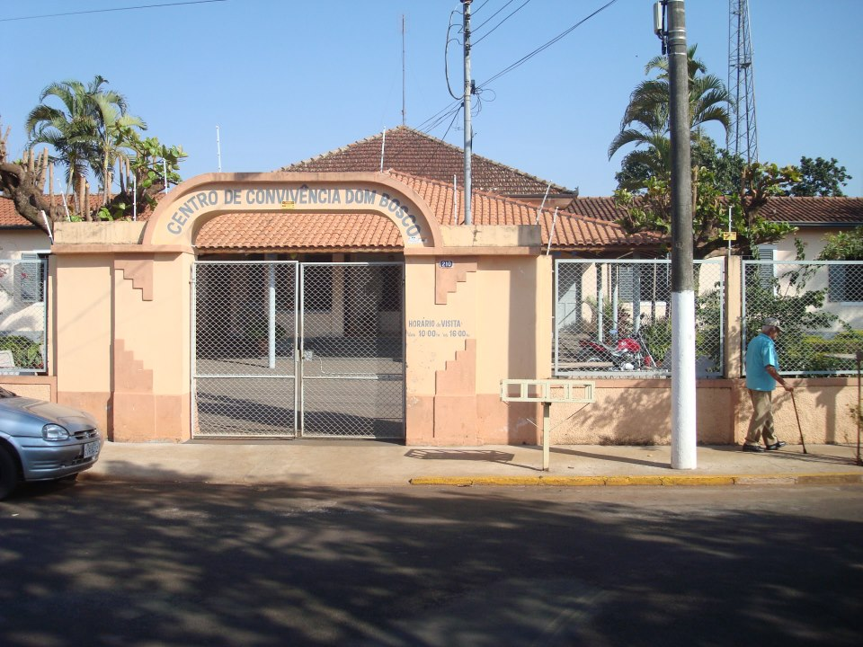
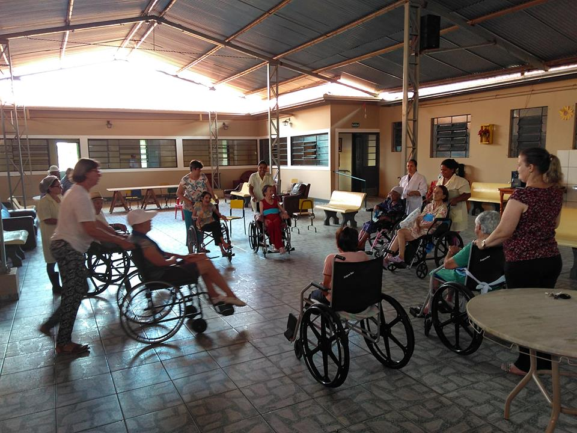
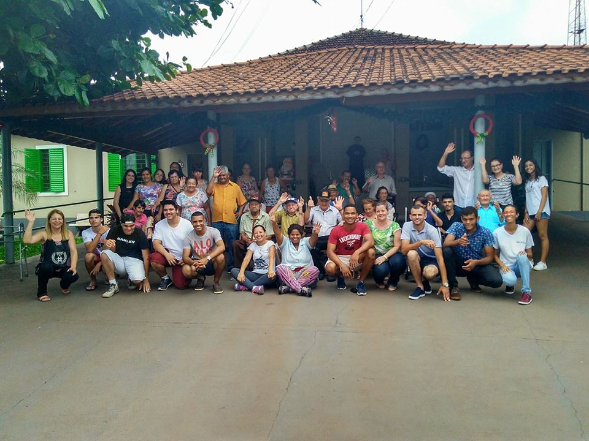

Ajude o
Faça uma doação
Ajude o
Centro de Convicência Dom Bosco
Faça uma doação

Seja um voluntário
Preencha o formulário"O amor cresce com a doação. O amor que damos é o único que mantemos.A única maneira de ter amor é oferecê-lo aos outros."
Elbert Hubbard

A alma só envelhece você,